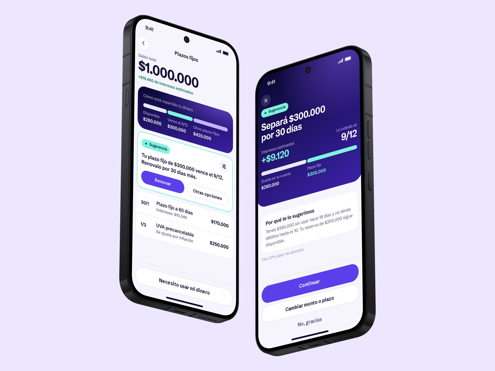
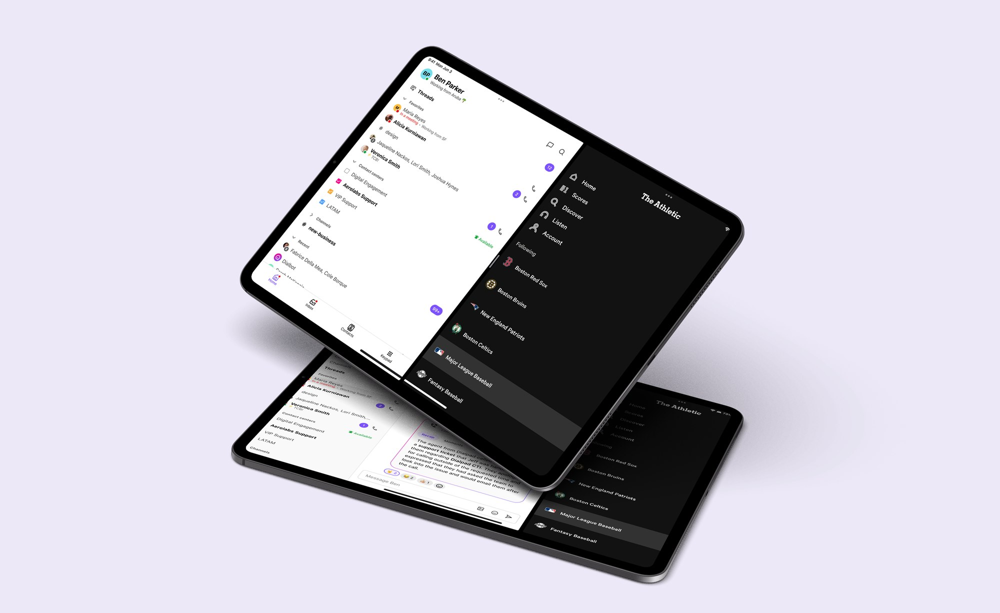
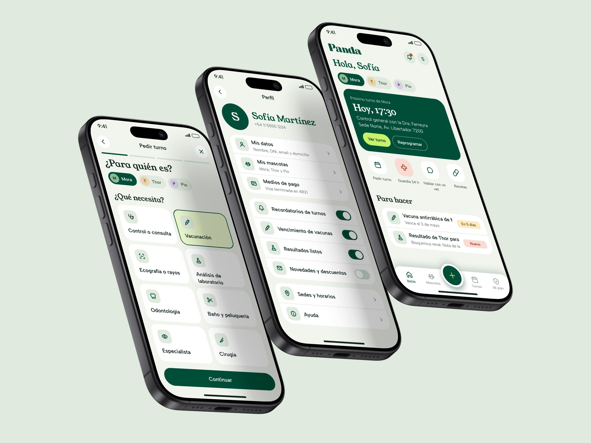
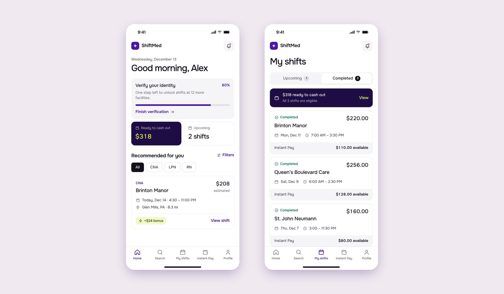

Hi! I'm Lala · Senior Product Designer
Turning complex
problems into systems
I like the messy part: tangled workflows, competing requirements, half-formed ideas. My job is to find the questions that matter and answer them with something people use without thinking twice.
Recent projects

Agentic term deposits
An agent that suggests how much money to set aside and for how long, for one of Argentina’s largest banks
- Fintech
- Agentic UX

Dialpad
AI-powered communication at scale
- AI
- Mobile

Yuda
A mobile platform connecting users with verified home service professionals
- Marketplace
- Research

Plei
B2B dashboard to help facilities manage games, check-ins, and daily operations
- B2B
- Dashboard

Kavak Capital
New self-management section for a fintech unicorn
- Fintech
- Research

Panda
Redesigning a veterinary clinic’s app: a new look and feel, a design system and every flow for pet owners
- Pet health
- Design system

ShiftMed
A credentialing flow people can finish, and same-day pay, for a healthcare staffing app
- Healthcare
- Mobile
What I do best
-
Framing the right problem before designing anything: business goals, technical constraints and what people actually need — from discovery to a roadmap the team believes in.
- Discovery
- Problem framing
- Prioritization
- Workshops & co-creation
- Success metrics
- Stakeholder alignment
-
Designing AI features people trust: when AI should act, when it should stay silent, and how it explains itself. At Dialpad, real-time transcription and AI summaries reached 100K+ users.
- Human-AI interaction
- Trust & transparency
- AI summaries & insights
- Uncertainty & error states
- Prompt design
- LLM capabilities & limits
-
Interfaces for AI that takes action on people's behalf: showing the plan and the progress, asking for permission at the right moment, and keeping humans in control with review, undo and clear handoffs.
- Agent workflows
- Human in the loop
- Permissions & confirmations
- Progress & status
- Undo & recovery
- AI-assisted workflows
-
Systems that scale across teams and platforms — built from scratch at Yuda and Plei, grown inside existing ones at Dialpad and Kavak. Documented, accessible and ready for engineering.
- Tokens & variables
- Component libraries
- Documentation
- Accessibility (WCAG)
- Figma
- Dev handoff
-
From interviews and usability tests to high-fidelity prototypes — using AI to synthesize findings faster and put ideas in front of people sooner.
- User interviews
- Usability testing
- Synthesis
- Interaction design
- Rapid prototyping
- AI-assisted prototyping
The best products feel obvious.
Getting there rarely is.
For 12+ years I've designed products people rely on every day — in fintech, healthcare, marketplaces, food delivery and AI-powered communication — for companies like Dialpad, Kavak, PedidosYa and McKesson.
My work starts before the screens: research, strategy and a lot of conversations with users, PMs and engineers. Then I simplify, prototype and test until the obvious answer shows up.
Outside of product, I'm usually behind a camera — it trains the same muscle: noticing what matters and cutting the rest.
I use AI every day to research, explore and prototype faster — so I can spend more time where design really happens: with people, and on the decisions.
Where AI helps, and what I never delegate.
AI takes the repetitive, time-consuming work off my plate. The thinking, the conversations and the judgment stay with me.
01
Discover
AI helps with
- Competitor and pattern scans
- Summarizing interview notes
- Drafting research guides
I own
Talking to users, and deciding what really matters.
02
Define
AI helps with
- Clustering insights
- Drafting problem statements and hypotheses
- Pressure-testing assumptions
I own
Framing the problem and prioritizing with the team.
03
Design
AI helps with
- Exploring many variations fast
- UX writing drafts
- Quick prototypes with Figma Make and Claude Code
I own
Interaction decisions, the details, and the final call on quality.
04
Deliver
AI helps with
- Specs and documentation
- Edge cases and empty states
- QA checklists
I own
The conversations with engineering, and what ships.
12+ years in product.
-
Mar 2026 – Present
Swiss Medical · Huma
Freelance
Product Strategy & Design Consultant
Digital experiences for Swiss Medical, one of Argentina’s leading private healthcare groups, and product strategy and design with Huma, a product strategy consultancy.
-
Feb 2025 – Mar 2026
itti
Hybrid
Lead Product Designer
Led Yuda, a two-sided home services marketplace, from concept to MVP — including its design system and field research in Asunción.
See the Yuda case → -
Jun 2024 – Jan 2025
Plei
Remote · Contract
Senior Product Designer
Redesigned core journeys of a sports marketplace and designed a new dashboard for facility managers. Ran a gamification workshop that surfaced 30+ opportunities.
See the Plei case → -
Dec 2023 – May 2024
McKesson / Ontada
Remote · Contract
Senior Product Designer
Enterprise SaaS workflows for oncology care teams: data-heavy reporting and insurance authorizations, validated with clinical staff.
-
Feb 2023 – Oct 2023
Dialpad
Remote
Senior Product Designer
AI-powered features for mobile and desktop, the iPad app, and mobile design system foundations.
See the Dialpad case → -
Nov 2021 – Feb 2023
Kavak
Hybrid
Senior Product Designer
Self-service experience for Kavak Capital, validated with 16 interviews and usability tests in Mexico City.
See the Kavak Capital case → -
2021
ShiftMed
Freelance
Lead Product Designer
Redesign of the mobile app for healthcare workers: a simpler credentialing flow and Instant Pay, for same-day pay.
See the ShiftMed case → -
Oct 2020 – Oct 2021
PedidosYa
Hybrid
Senior Product Designer
A B2B platform behind a USD 280K monthly agreement, payment and wallet experiences, and a new Vendor Portal.
-
Jun 2019 – Oct 2020
iúnigo
On-site
Senior Product Designer
Designed a new rent-insurance product that opened a new business division and customer segment.
-
2017 – 2019
Earlier
Accenture — Semi-Senior UX Designer · Globant — Semi-Senior UX/UI Designer
Beyond product
When I'm not designing products, I'm out with one of my cameras. Photography is how I stay curious about light, composition, and the world outside the screen.
-
Amalfi Coast, Italy35mm film
-
Positano, Italy35mm film
-
Florence, Italy35mm film
-
Athens, Greece35mm film
-
Barcelona, Spain35mm film
-
Prague, Czechia35mm film
-
Cesena, Italy35mm film
-
Sagrada Família, Barcelona35mm film
-
Tuscany, Italy35mm film
-
Nafplio, Greece35mm film
-
Botanical Garden, Buenos Aires35mm film
-
Olivos Harbor, Buenos Aires35mm film
-
Olivos, Buenos Aires35mm film
-
Lido di Camaiore, Italy35mm film
-
Botanical Garden, Buenos Aires35mm film
Let's talk.
Have a product that needs clearer flows, a strategy to shape, or a system to build? Tell me a bit about it and let's find a time to talk.
lalapicoroso@gmail.com